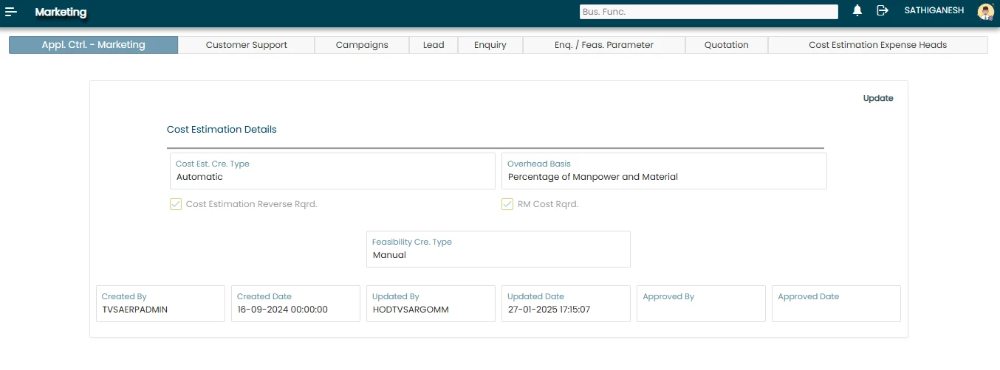
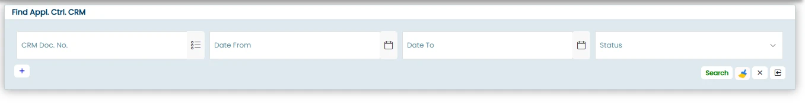
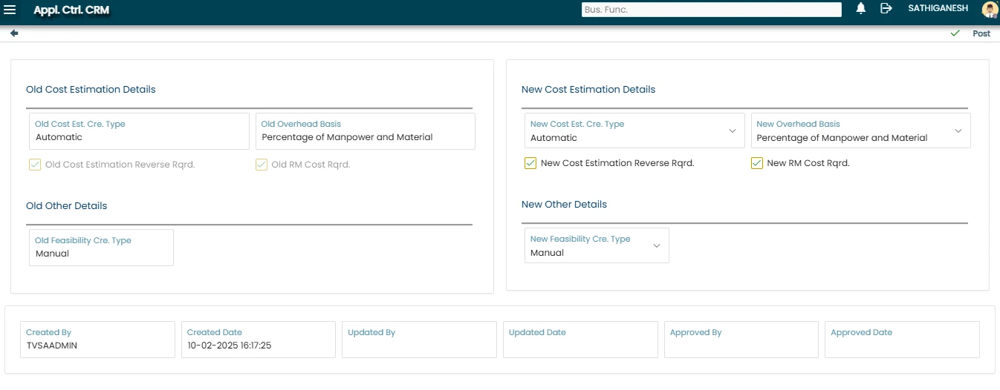

<div data-category="CRM" data-title="Appl.Ctrl. (CRM)" data-updated="December 01, 2025" data-contributors="RoadmapIT" data-breadcrumb="Home,CRM,Appl.Ctrl. (CRM)">
  <div class="page-content">
    <p>This screen is used to define the application control details of marketing management.</p>
    <h5>Navigation path:</h5>
    <p class="fs-6">CRM \ Setup \ Setup-Marketing \ Appl.ctrl.-Marketing</p>
    
    <ul style="list-style-type: none; align-content: center">
      <li class="mouse-icon">Click on Update button.</li>
    </ul>
    
    <ul style="list-style-type: none; align-content: center">
      <li class="mouse-icon">Click on <i class="bi bi-plus fs-4 mx-2 text-primary"></i> button.</li>
    </ul>
    
    <ul style="list-style-type: none; align-content: center">
      <li class="mouse-icon">Cost Est. Cre. Type
        <ol class="mt-1" style="list-style-type: circle;">
          <li class="ps-1"><strong>Manual</strong> - Cost estimation document is created manually.</li>
          <li class="ps-1"><strong>Automatic</strong> – If cost estimation flag is enabled for the Enquiry, while approving the enquiry, cost estimation is automatically created.</li>
        </ol>
      </li>
      <li class="mouse-icon">Define the overhead Basis calculation for the cost estimation based on
        <ol class="mt-1" style="list-style-type: circle;">
          <li class="ps-1">Resource</li>
          <li class="ps-1">Percentage of Manpower</li>
          <li class="ps-1">Percentage of Material</li>
          <li class="ps-1">Percentage of Manpower and Material</li>
        </ol>
      </li>
      <li class="mouse-icon">If the Cost Estimation Reverse Rqrd. Flag is checked, system allows to reverse the posted cost estimation document</li>
      <li class="mouse-icon">Enable the RM Cost Rqrd. Flag to include the RM cost for cost estimation</li>
      <li class="mouse-icon">Feasibility. Cre. Type
        <ol class="mt-1" style="list-style-type: circle;">
          <li class="ps-1"><strong>Manual</strong> - Feasibility study document is created manually.</li>
          <li class="ps-1"><strong>Automatic</strong> – If Feasibility study flag is enabled for the Enquiry, while approving the enquiry, Feasibility study is automatically created.</li>
        </ol>
      </li>
      <li class="mouse-icon">Click <i class="bi bi-check-lg fs-4 mx-2 text-success"></i> to save</li>
      <li class="mouse-icon">Click Post to forward the document for approval</li>
    </ul>
  </div>
</div>
